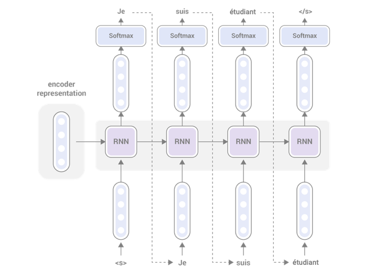

exBERT
Explorable and Explainable Transformers
Ben Hoover
benjamin.hoover@ibm.com2019-11-22
Table of Contents
Language Modeling
- ngrams
- seq2seq (RNN / LSTM)
- Transformer
ngrams
 http://recognize-speech.com/language-model/n-gram-model/comparison
http://recognize-speech.com/language-model/n-gram-model/comparison
skipgrams
https://towardsdatascience.com/skip-gram-nlp-context-words-prediction-algorithm-5bbf34f84e0cseq2seq encoder
 http://www.realworldnlpbook.com/blog/building-seq2seq-machine-translation-models-using-allennlp.html
http://www.realworldnlpbook.com/blog/building-seq2seq-machine-translation-models-using-allennlp.html
seq2seq decoder
 http://www.realworldnlpbook.com/blog/building-seq2seq-machine-translation-models-using-allennlp.htmlTransformers
Attention
 http://jalammar.github.io/illustrated-transformer/
http://jalammar.github.io/illustrated-transformer/
Multi-Heads
 http://jalammar.github.io/illustrated-transformer/
http://jalammar.github.io/illustrated-transformer/
Important Terminology
- TOKEN: Word, punctuation, part of word, …
- EMBEDDING : High dim vector representing each token ("representations")
- CONTEXT : Summary of all past embeddings of all tokens (represents the model understanding of the context)
- ATTENTION : Probability weighting the importance of other tokens
- HEAD(s) : Uses attention to calculate context
Types of Transformers
2 different kinds of transformer models:
- Bidirectional (BERT)
- Autoregressive (GPT2)
BertVIZ
https://github.com/jessevig/bertvizPapers
Walkthrough
The Engineering Stack
Architecture
- Python Backend with Connexion
- Typescript Frontend with D3
Connexion
- A Flask wrapper
- Define API in
.yamlfile
Connexion UI
https://swagger.io/tools/swagger-ui/Python Tools
- Pytorch (https://pytorch.org/)
- Huggingface (https://github.com/huggingface)
- SpaCy (https://spacy.io/)
- Faiss (https://github.com/facebookresearch/faiss)
Frontend
- Typescript (https://www.typescriptlang.org/)
- D3 (https://d3js.org/)
- Raw HTML + CSS
- State stored in URI
Hardware resources
- GPUs available, running on CPU for inference (both pytorch and faiss)
- NGINX (https://www.nginx.com/)
This presentation
- Reveal.js
- https://revealjs.com/#/
- Emacs
- https://www.gnu.org/software/emacs/
- org-reveal
- https://github.com/yjwen/org-reveal
Credits
- Hendrik Strobelt (hendrik.strobelt@ibm.com)
- Sebastian Gehrmann (gehrmann@g.harvard.edu)
Ben Hoover
benjamin.hoover@ibm.com